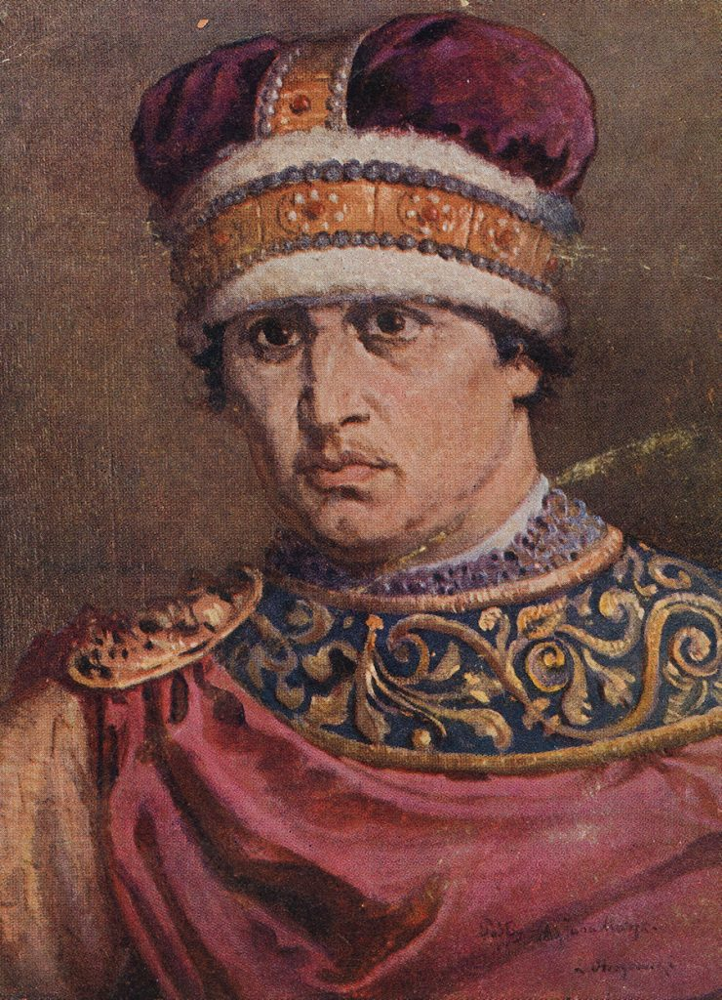

Władysław II Wygnaniec
Władysław II Wygnaniec, znany również jako Władysław II Śląski, był polskim księciem pochodzącym z dynastii Piastów. Urodził się w 1105 r., a zmarł w 1159 roku. Był synem księcia Bolesława III Krzywoustego i Salomei von Berg-Schelklingen. Po śmierci swojego ojca w 1138 roku Władysław II Wygnaniec odziedziczył księstwo śląskie i dzielnice senioralną, pod jego zwierzchnictwem było Pomorze.
Podczas swojego pobytu na dworze cesarskim Władysław II Wygnaniec pozostał aktywny politycznie i prowadził działania dyplomatyczne na rzecz odzyskania swojego księstwa. W 1146 roku zawarł przymierze z Konradem III, królem Niemiec i cesarzem Świętego Cesarstwa Rzymskiego. Przymierze to doprowadziło do ostatecznego powrotu Władysława na Śląsk w 1159 roku.
Niestey, Władysław zmarł nie doczekawszy się powrotu do Polski. ochowany został w klasztorze Cystersów w Pforcie.